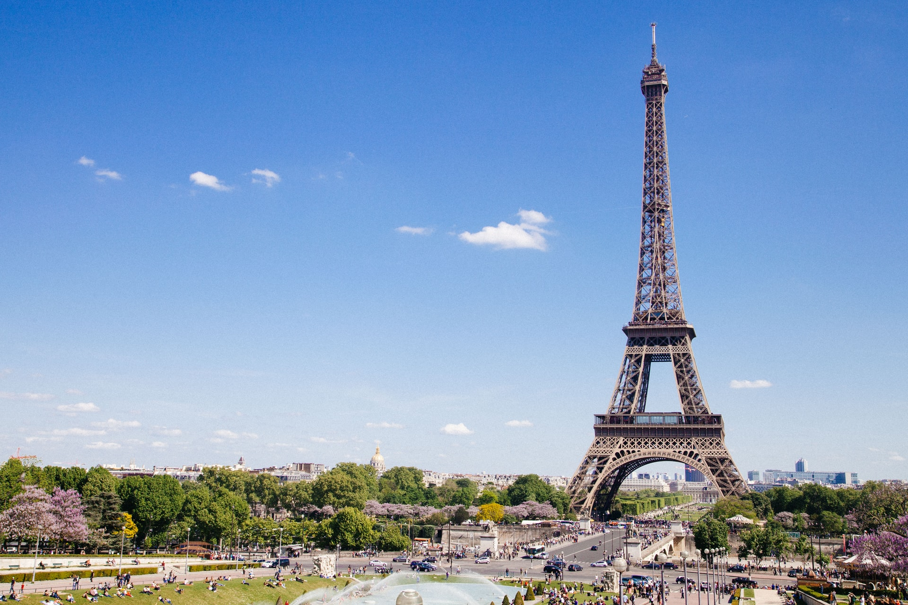

-

Barcelona
Barcelona is a city on the coast of northeastern Spain. It is the capital and largest city of the autonomous community of Catalonia, as well as the second most populous municipality of Spain. With a population of 1.6 million within city limits.
-

Hawaii
Hawaii is a state in the Western United States, located in the Pacific Ocean about 2,000 miles from the U.S. mainland. It is the only state outside North America, the only state that is an archipelago, and the only state in the tropics. Hawaii is also one of four U.S.
-

London
London is the capital and largest city of England and the United Kingdom. It stands on the River Thames in south-east England at the head of a 50-mile (80 km) estuary down to the North Sea, and has been a major settlement for two millennia. The City of London, its ancient core and financial centre, was founded by the Romans as Londinium and retains boundaries close to its medieval ones.Since the 19th century, "London" has also referred to the metropolis around this core, historically split between the counties of Middlesex, Essex, Surrey, Kent, and Hertfordshire, which largely comprises Greater London, governed by the Greater London Authority. The City of Westminster, to the west of the City of London, has for centuries held the national government and parliament.
-

Miami
Miami, officially the City of Miami, is a coastal metropolis located in Miami-Dade County in southeastern Florida (United States). With a population of 467,963 as of the 2020 year, it is the 44th-largest city in the United States.
-

Munich
Munich is the capital and most populous city of Bavaria. With a population of 1,558,395 inhabitants as of 31 July 2020, it is the third-largest city in Germany, after Berlin and Hamburg, and thus the largest which does not constitute its own state.
-

New York City
New York, often called New York City to distinguish it from New York State, or NYC for short, is the most populous city in the United States. With a 2020 population of 8,804,190 distributed over 778.2 km2, it is also the most densely populated major city in the US.
-

Paris
The City of Paris is the centre and seat of government of the region and province of Île-de-France, or Paris Region, which has an estimated population of 12 milion. According to the Economist Intelligence Unit Worldwide Cost of Living Survey in 2018, Paris was the second most expensive city in the world.
-

Sydney
Sydney is the capital city of the state of New South Wales, and the most populous city in Australia and Oceania. Sydney is made up of 658 suburbs, spread across 33 local government areas. Residents of the city are known as "Sydneysiders". As of June 2020, Sydney's estimated metropolitan population was 5 milion.
-

Tokyo
Historically known in the west as Tokio and officially the Tokyo Metropolis, is the capital, the largest city, and the most populous metropolitan area in the Greater Tokyo Area, the Kantō region, and Japan, as well as the most populous metropolitan area in the world and most populous prefecture of Japan.
-
Bali
Bali is a province of Indonesia and the westernmost of the Lesser Sunda Islands. East of Java and west of Lombok, the province includes the island of Bali and a few smaller neighbouring islands, notably Nusa Penida, Nusa Lembongan, and Nusa Ceningan. The provincial capital, Denpasar, is the most populous city in the Lesser Sunda Islands and the second-largest, after Makassar, in Eastern Indonesia